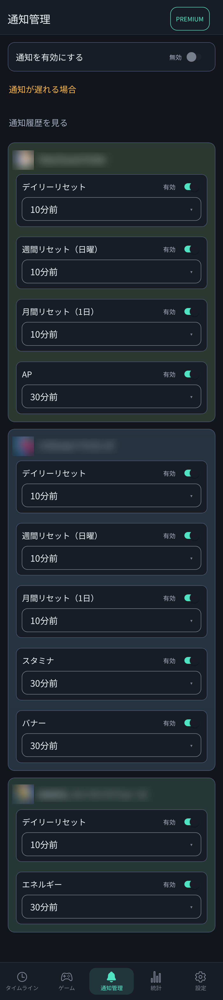

🔔 4. 通知管理
下部メニューの「通知管理」タブでは、スタミナが満タンになる直前や、デイリー/週間リセット、イベント終了時刻の前に受け取るプッシュ通知をきめ細かく設定できます。

通知管理画面：ゲームごとにスタミナ全快や各種リセットの事前通知タイミングを柔軟に設定
⚙️ 通知項目の設定方法
ステップ 1
通知の全体有効化
画面最上部にある「通知を有効にする」スイッチをオンにします。初めてオンにする際は、Android端末の通知許可ダイアログが表示されますので「許可」を選択してください。
ステップ 2
項目ごとの通知タイミング選択
各ゲームカード内に並ぶ項目ごとに、通知タイミング（ドロップダウン）と有効スイッチを設定します。
- スタミナ（AP / エネルギー）：スタミナが満タンになる「30分前」「10分前」「満タン時」などに通知を設定できます。スタミナが溢れて無駄になる前にゲームを開いて消費できます。
- デイリーリセット：日付が変わる「10分前」などに通知。デイリーミッションの受け取り忘れを防ぎます。
- 週間リセット・月間リセット：毎週月曜日や月初のリセット前にお知らせ。
- フリー項目（イベント・バナー）：登録した期間限定ガチャやイベントの終了前に通知します。
🛠️ 通知が遅れる場合の確認ポイント
画面上部の「通知が遅れる場合」リンクから、Androidのバッテリー節電機能による通知遅延の対策を確認できます。
- 端末の「設定」›「アプリ」›「スタミナ手帳」›「バッテリー」を開きます。
- バッテリー使用量の管理で「制限なし」または「最適化しない」に設定してください。
- 「通知履歴を見る」をタップすると、これまでにアプリから送信された通知の記録をいつでも確認できます。